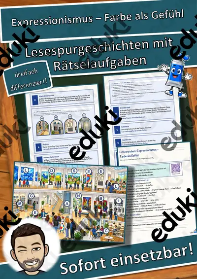

Musik und Gefühle – wie Musik uns bewegt – Lesespurgeschichte mit Rätselaufgaben (Klasse 3)
Musik und Gefühle – wie Musik uns bewegt – Lesespurgeschichte Musik (Klasse 3/4)Begib dich mit deiner Klasse auf eine spannende Lesespur durch die Mitmach-Ausstellung „Musik bewegt“! Lina und Theo entdecken mit ihrer Klasse im Kindermuseum, wie Musik Gefühle weckt: Im Tempotunnel wird aus schneller Musik Hüpfen und aus langsamer Musik Schneckentempo, an der Lautstärke-Leiter geht es von piano bis forte, im Dur-Moll-Zimmer klingt dieselbe Melodie einmal hell und einmal dunkel. An der Klangfarbenwand zwitschert die Flöte und brummt die Tuba, im Kinosaal verändert Musik einen ganzen Film, auf dem Marschplatz macht ein kräftiger Marsch stark, im Malatelier wird Musik zu Farben – und auf der Konzertbühne spielen alle Gefühle mit Instrumenten vor. Ihre Note Herzi ist immer dabei. Am Ende jedes Abschnitts verrät ein Hinweis den nächsten Ort auf dem Plan – nur wer genau liest, findet den Weg und sammelt alle geheimen Buchstaben zum Lösungswort.
Die perfekte Lesespur für den MUSIKUNTERRICHT der 3. und 4. Klasse – ideal zum Thema Musik hören und verstehen: Sie verbindet sinnentnehmendes Lesen mit musikalischen Parametern, Wirkung von Musik und kreativem Gestalten. Das Material ist SOFORT EINSETZBAR und in DREI DIFFERENZIERUNGSSTUFEN (leicht ★ / mittel ★★ / schwer ★★★) angelegt.WICHTIG: Das komplette Material ist sowohl in FARBE als auch in SCHWARZ-WEISS enthalten – ideal zum Sparen von Druckkosten.DAS IST ENTHALTEN
- Lesespurgeschichte in 3 Niveaus (leicht, mittel, schwer)
- farbiger Plan als Suchkarte
- Hörverstehen mit QR-Code zur MP3 (selbstständiges Hören mit Kopfhörern)
- vier Aufträge auf dem Weg: eine Zuordnung, ein Quiz, eine Rechenaufgabe und ein Steckbrief
- Rätselseite (Wörter-Suchsel + Fragen)
- Ausmalbild zum Thema (Kinder spielen Gefühle mit Instrumenten)
- ausführliches Lösungsblatt für die Lehrkraft
- alles zusätzlich als komplette Schwarz-Weiß-VarianteSO GEHT DIE LESESPURDie Kinder lesen ab START, finden im Text den nächsten Ort, suchen ihn auf dem Plan und lesen bei dieser Station weiter. An jeder richtigen Station gibt es einen Buchstaben. Eingebaute Sackgassen (Garderobe, Museumsshop, Kiosk, Bastelkeller) sind keine Stationen und dienen der Selbstkontrolle. Am Ende werden die gesammelten Buchstaben umgestellt und ergeben ein geheimes Lösungswort. (Die Lösungen sind selbstverständlich nur im Lösungsblatt für die Lehrkraft enthalten.)INHALTLICHER SCHWERPUNKTDie Kinder entdecken, wie Tempo, Lautstärke, Dur und Moll sowie Klangfarben Stimmungen erzeugen, erleben, wie Musik Bilder verändert, und drücken Gefühle selbst mit Instrumenten und Farben aus.ABGEDECKTER LEHRPLAN (Klasse 3/4, Musik)
- Musik (LehrplanPLUS Bayern) – Jahrgangsstufe 3/4 „Musik hören – Musik verstehen“: Wirkungen von Musik wahrnehmen und beschreiben, musikalische Parameter mit Stimmungen verbinden und Gefühle mit Instrumenten gestalten.
- Deutsch – Lesen: Texten gezielt Informationen entnehmen; Sprechen: Gefühle benennen; Zuhören: einem Sachhörtext folgen (Hörverstehen mit MP3).
- Mathematik – Addition, Multiplikation und Subtraktion.
- Fächerübergreifend / Kompetenzen: Kunst (Musik malen), soziales Lernen (Gefühle wahrnehmen), genaues Lesen und Prüfen, kreatives Gestalten (Ausmalbild).
Geeignet für Freiarbeit, Stationenlernen, Vertretungsstunden, Wochenplan, Projekttage und Distanzunterricht. Klassenstufe 3/4.
Ähnliche Materialien

Gefühl – Hörverstehen mit Lückentext (interaktiv)

Gefühl Lückentext mit Wortspeicher Hörverstehen und Suchsel

Kleine Spiele auf dem Pausenhof – fangen, hüpfen, mitmachen – Lesespurgeschichte mit Rätselaufgaben (Klasse 1)

Die Romantik – Musik der Gefühle – Lesespurgeschichte mit Rätselaufgaben (Klasse 9)

Gefühle verstehen und zeigen – Lesespurgeschichte mit Rätselaufgaben (Klasse 3)

Klammerkarten: Gefühle – Klammerkarten – Klasse 1–4

Expressionismus – Farbe als Gefühl – Lesespurgeschichte mit Rätselaufgaben (Klasse 10)